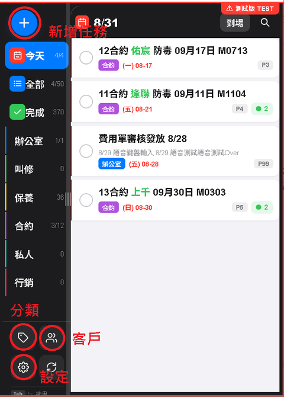
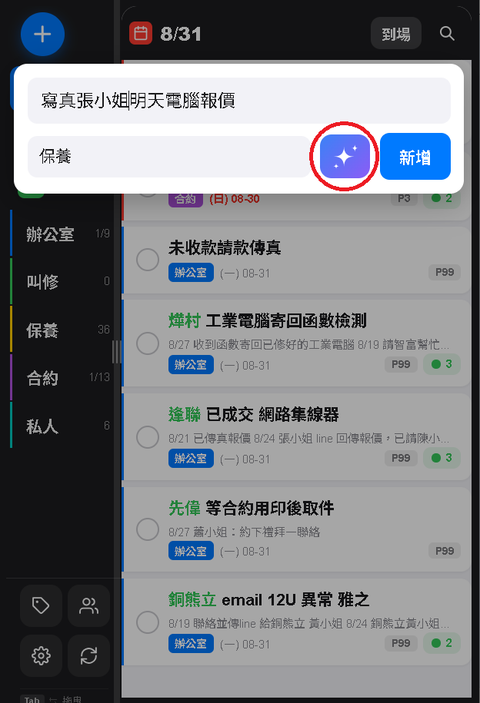
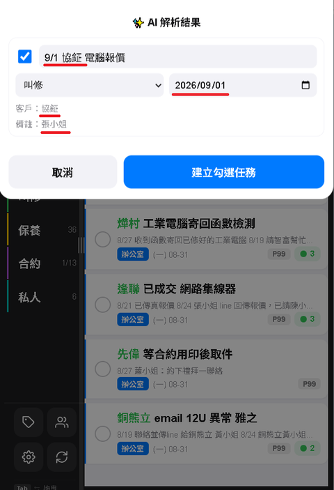
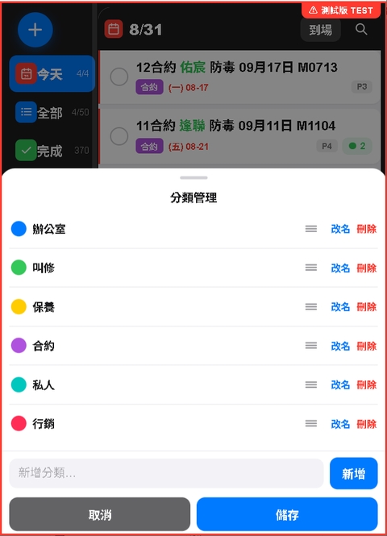
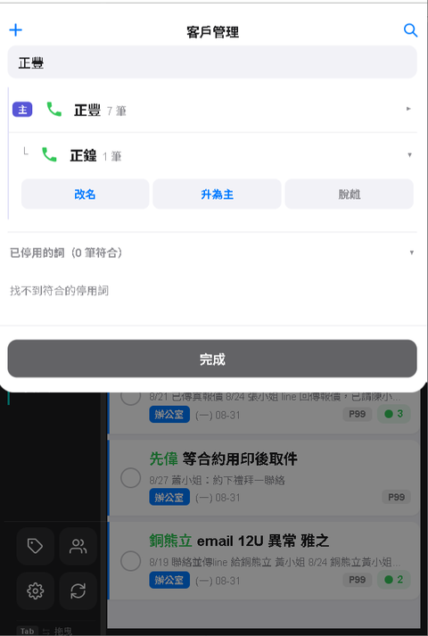
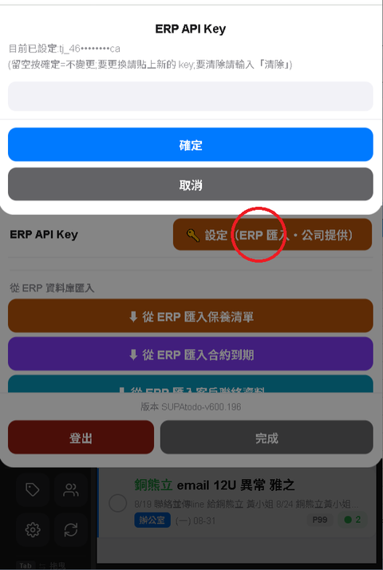
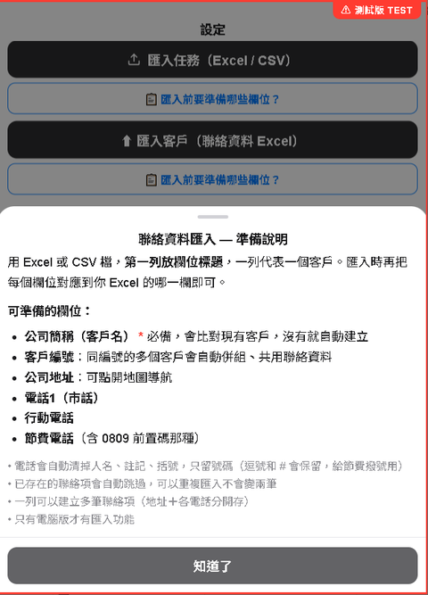

1綁定與登入
第一次使用需要用你的 Google 帳號登入，並綁定公司身分。綁定一次，之後用同一個 Google 帳號登入就會自動進入，不用再輸入。
1
用手機或電腦瀏覽器打開 App 網址（向主管索取）。
2
點「使用 Google 登入」，選擇你的 Google 帳號。
3
第一次登入會出現綁定畫面，依欄位輸入公司給你的 統一編號 與 工號，送出綁定。
4
綁定成功後就進入主畫面。下次用同一個 Google 帳號登入，不會再要求輸入統編與工號。
小提醒：統編與工號由管理者事先建立在系統名冊中。若你不知道自己的統編或工號，請向主管或管理者索取。
綁定失敗？畫面會顯示錯誤訊息。請先確認統編與工號輸入正確（沒有多打空格），若仍失敗，請聯繫管理者確認名冊中是否已建立你的資料。
［此處可放：登入畫面 / 綁定畫面 截圖］
2認識主畫面
登入後看到的就是你的待辦清單。左側（或下方）有一排常用按鈕：
⚙
設定（齒輪圖示）：ERP／Excel 匯入、API Key、登出等（見第 6、7 節）。
小提醒：點日期可看當天任務；完成的任務會收進「已完成」分類，不會不見。

左上「＋」新增任務、側欄下方「分類」「客戶」「設定」
3新增與完成任務
新增任務 — 點按「＋」（快速記一筆）
2
輸入任務內容，送出。適合「趕快記一筆、之後再補細節」。
新增任務 — 長按「＋」（完整新增）
2
可一次填齊：任務內容、到期日、優先序、備註、分類、客戶等。
3
選客戶時可直接搜尋既有客戶（見第 5 節）。填好後儲存。
點按 vs 長按：點按＝快速記一筆；長按＝完整填寫。趕時間就點按，要排細節就長按。
完成任務
1
直接點任務最前面的灰色圈圈，就會標記完成，任務會收進「已完成」分類（不是刪除，資料還在）。
2
要還原：切到「已完成」分類，找到該任務，再點一次圈圈即可還原成待辦。
完成 vs 刪除：「完成」是把任務收起來、之後找得回；「刪除」才是真的移除。日常結案用「完成」即可。

① 快速新增：輸入內容，按右邊的 AI 解析

② 解析結果：自動判斷分類、日期、客戶
4分類功能
分類用來把任務分門別類（例如：保養、合約、一般…），方便你依類別檢視。
2
在下方輸入框輸入分類名稱（如「保養」），按「新增」（或按 Enter）。
3
現有分類可在列表中管理（改名、排序、設定顏色等）。
小提醒：新增或編輯任務時，就能從清單選擇這裡建立的分類。

分類管理畫面：可改名、拖曳排序、設定顏色
5客戶管理
把常往來的客戶建進系統，新增任務時就能直接選客戶、帶出聯絡資料。
2
點左上角「＋」展開新增客戶，輸入客戶名稱後新增。
小提醒：大量客戶不用手動一筆筆建，可用第 6 節「ERP 匯入」或第 7 節「Excel 匯入」批次帶入。

客戶管理畫面：設成子客戶後可「改名」「升為主」「脫離」
6從 ERP 匯入 電腦版
可從公司 ERP 直接匯入 保養清單、合約到期、客戶聯絡資料，省去手動輸入。
使用前提：ERP 匯入只能在電腦上、且連著公司內網（公司 WiFi）時使用。手機因連線限制無法使用，會自動隱藏此功能。
第一步：申請並設定 ERP API Key（只需設定一次）
1
在公司內部網路，用瀏覽器開啟 http://192.168.3.139:8000/API/，依畫面指示申請一把屬於自己的 API Key。
3
找到「ERP API Key」，點 🔑 設定（ERP 匯入・公司提供）。
小提醒：設定好 Key 之後，設定頁的「從 ERP 匯入」按鈕才會出現／可用。這把 Key 是每位使用者自己申請、自己的，不是公司統一發一把大家共用，同事各自要去申請。
第二步：執行匯入
設定頁的「從 ERP 資料庫匯入」區有三顆按鈕：
3
按「查詢」，系統會抓取資料並顯示預覽（每筆是新增／更新／跳過等）。
4
確認預覽沒問題後，按「匯入」。完成後會顯示結果統計。
放心匯入：保養、合約任務只會新增沒出現過的，不會動到既有任務的任何欄位（包含你事後手動改過的內容）。客戶聯絡資料會記得哪些是你手動填的、哪些是上次匯入建的——手動填的資料絕對不會被覆蓋，只有「上次也是匯入建立」的資料，才會在 ERP 資料有變動時跟著更新。同名但編號不同的客戶，會自動跳過並提示，不會誤蓋既有客戶。

設定頁點「設定」，貼上申請到的 Key
7用 Excel 匯入 電腦版
沒有 ERP、或想用自己的 Excel 檔批次帶入時，可用 Excel／CSV 匯入。
2
找到匯入區，可選「匯入任務（Excel / CSV）」或「匯入客戶（聯絡資料 Excel）」。
3
匯入前，先點該項目下方的 📋 匯入前要準備哪些欄位？，照說明準備好 Excel 欄位。
4
選擇你的 Excel／CSV 檔，系統會讀取並匯入。
小提醒：電話會自動整理成純數字格式；系統會避免匯入重複資料。準備檔案時照「要準備哪些欄位」的說明做，成功率最高。

設定頁「匯入客戶」，點「匯入前要準備哪些欄位？」看說明